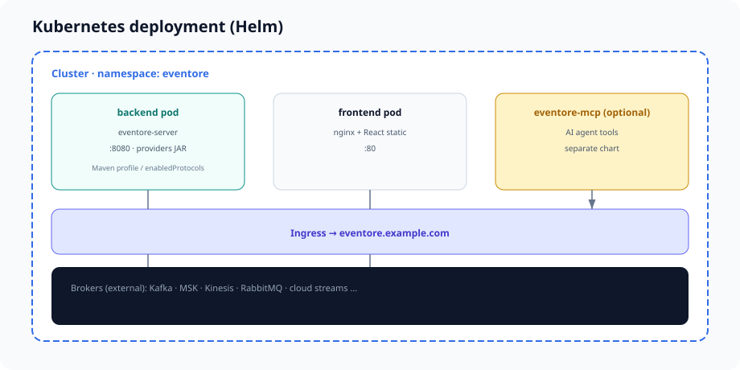

Deployment
Docker, Kubernetes, Helm, static product site, and optional MCP for AI agents.

Local brokers (development)
docker compose -f docker/docker-compose.brokers.yml up -d
cd backend && mvn -pl eventore-server -am spring-boot:run -Dspring-boot.run.profiles=local
cd frontend && npm install && npm run devPublished Docker images & Helm charts (CI)
Every push to main and every tag v* runs .github/workflows/publish-artifacts.yml, which builds and pushes container images to GitHub Container Registry (GHCR) and Helm charts to GHCR OCI. You can deploy without building from source.
docker pull or helm install oci://... returns not found.
Stream-provider backend images
Backend images are tagged by which stream providers are in the JAR, not by a single latest “full” build. Helm eventore.streamProviders picks the tag automatically.
| Image tag | Stream providers |
|---|---|
kafka, mqtt, jms, pulsar, rabbitmq, kinesis, gcp-pubsub, azure-servicebus | One provider each |
kafka-kinesis | KAFKA + KINESIS |
all | All eight providers |
Repository: ghcr.io/vijayptiwari/eventore-backend:<tag>. Matrix: deploy/ci-backend-images.json.
Frontend & MCP
| Image | Tags |
|---|---|
ghcr.io/vijayptiwari/eventore-frontend | latest, git SHA, semver |
ghcr.io/vijayptiwari/eventore-mcp | latest, git SHA, semver |
Helm: eventore.streamProviders
eventore:
streamProviders:
- KAFKA
- KINESIS # → image tag kafka-kinesisLeave image.backend.tag empty to auto-select the tag. Override only for custom builds.
helm install eventore ./deploy/helm/eventore \
-f deploy/helm/eventore/values-stream-kafka.yaml
helm install eventore ./deploy/helm/eventore \
-f deploy/helm/eventore/values-kafka-kinesis.yamlPull images locally
docker pull ghcr.io/vijayptiwari/eventore-backend:kafka
docker pull ghcr.io/vijayptiwari/eventore-frontend:latest
docker pull ghcr.io/vijayptiwari/eventore-mcp:latestHelm charts (OCI on GHCR)
| Chart | OCI reference | Workloads |
|---|---|---|
eventore | oci://ghcr.io/vijayptiwari/charts/eventore | Backend + frontend pods |
eventore-mcp | oci://ghcr.io/vijayptiwari/charts/eventore-mcp | Optional MCP pod |
Chart version matches Chart.yaml (e.g. 0.1.0).
helm install eventore oci://ghcr.io/vijayptiwari/charts/eventore --version 0.1.0 \
-f deploy/helm/eventore/values-stream-kafka.yaml
helm install eventore-mcp oci://ghcr.io/vijayptiwari/charts/eventore-mcp --version 0.1.0 \
--set eventore.apiUrl=http://eventore-backend:8080/api/v1New multi-provider combos: add an entry to deploy/ci-backend-images.json and merge to main so CI publishes that tag.
Build from source (custom provider sets)
docker build -f docker/Dockerfile.backend \
--build-arg EVENTORE_STREAM_PROFILES=provider-kafka,provider-kinesis \
-t eventore-backend:custom .
# Local dev — all providers (not published to GHCR)
docker build -f docker/Dockerfile.backend \
--build-arg EVENTORE_STREAM_PROFILES=providers-all \
-t eventore-backend:dev .Helm from repository (recommended for K8s)
Charts under deploy/helm/ deploy backend + frontend (and optionally MCP from the sibling chart). Same values as OCI installs — use a git checkout when you want to customize templates before install.
Values files:
values.yaml— defaultsvalues-admin.yaml— full admin modevalues-stream-kafka.yaml—streamProviders: [KAFKA]values-kafka-kinesis.yaml— Kafka + Kinesisvalues-published.yaml— OCI install example after CI
helm install eventore ./deploy/helm/eventore \
--set ingress.enabled=true \
--set ingress.hosts[0].host=eventore.example.com
# Slim stack
helm upgrade --install eventore ./deploy/helm/eventore \
-f deploy/helm/eventore/values-kafka-kinesis.yamlSee deploy/README.md in the repository for ingress, secrets, and network policies.
Hosting this documentation site
The docs/ folder is the product site (HTML + CSS + SVG). It is intended for GitHub Pages:
# Repository Settings → Pages → Branch: main, Folder: /docs
# Local preview
npx serve docsSee docs/README.md for details. The .nojekyll file ensures GitHub serves static HTML without Jekyll processing.
MCP server (optional)
A separate Node MCP server (mcp/eventore-mcp) exposes control plane and data plane APIs to AI agents (Cursor, HTTP MCP clients). It does not connect to brokers directly.
- Image:
ghcr.io/vijayptiwari/eventore-mcp:latest· Chart:eventore-mcp - Set
EVENTORE_API_URLto the backend Service (e.g.http://eventore-backend:8080/api/v1) - stdio for desktop;
MCP_TRANSPORT=httpon port 3100 in Kubernetes
Full tool, prompt, and resource catalog: MCP for AI agents.
Health and observability
GET /actuator/health
GET /api/v1/config
GET /api/v1/control/planeUse control plane revision to detect provider registration changes without restarting the UI.
Related: Getting started · Configuration · Architecture